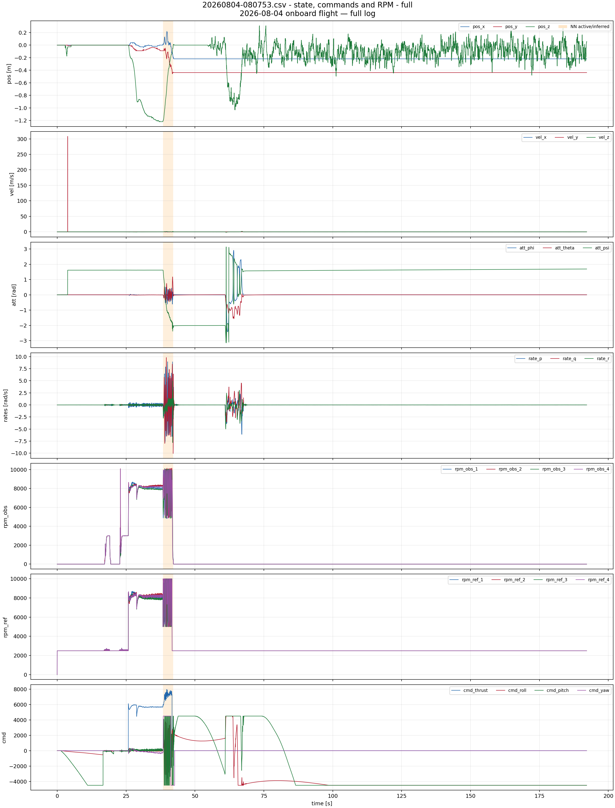
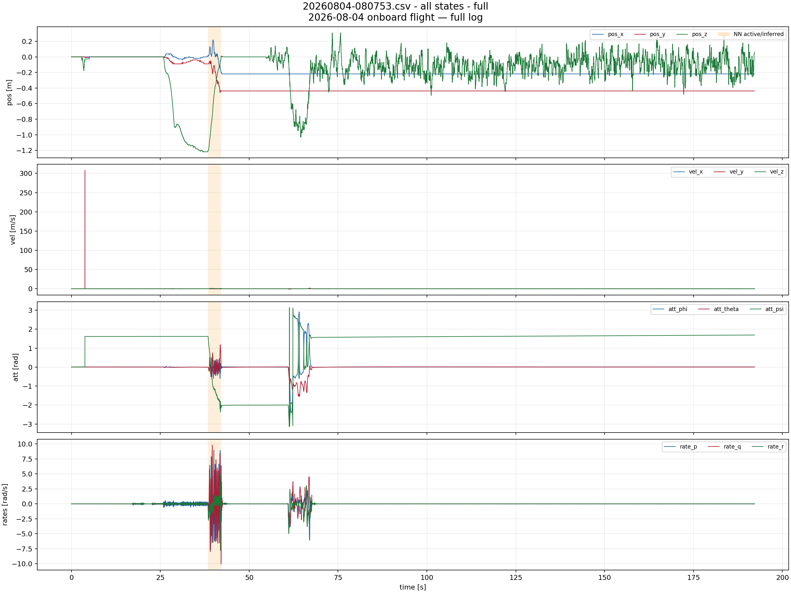
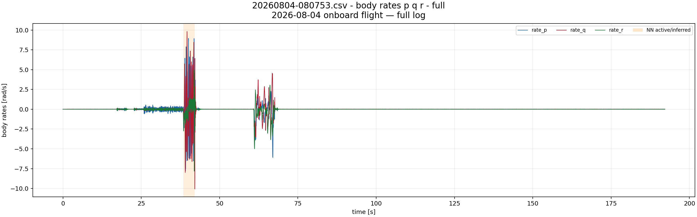
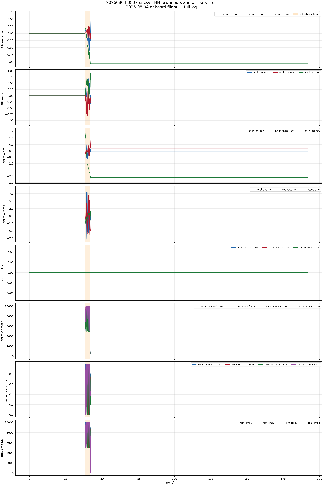
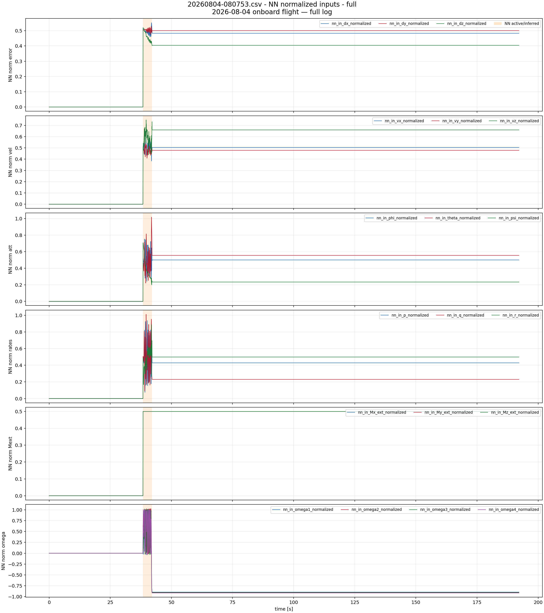
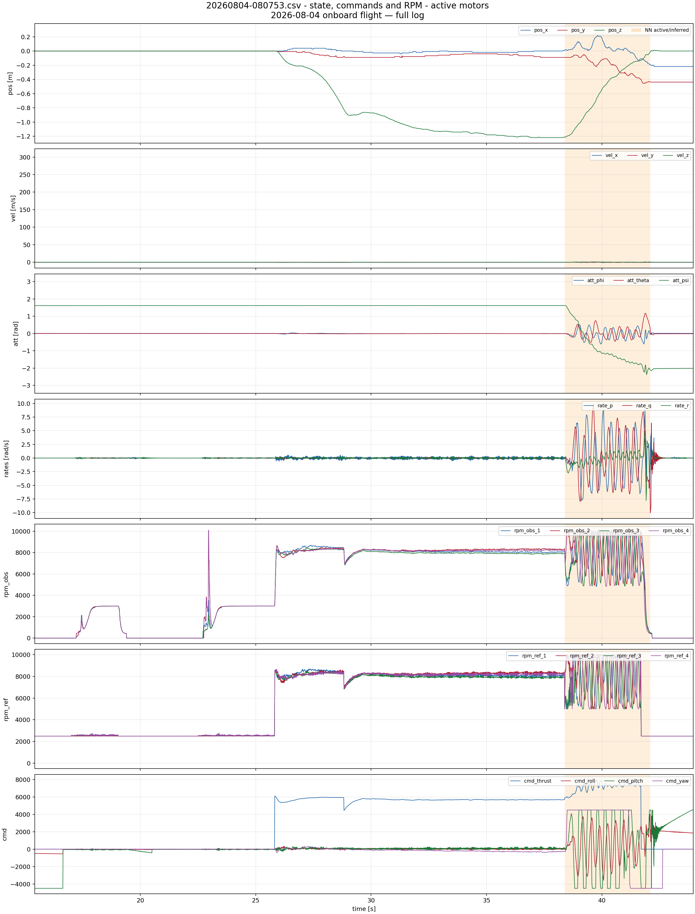
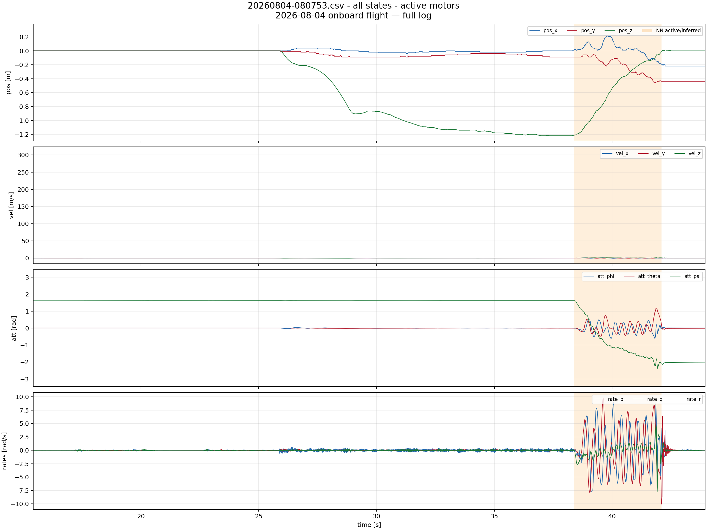
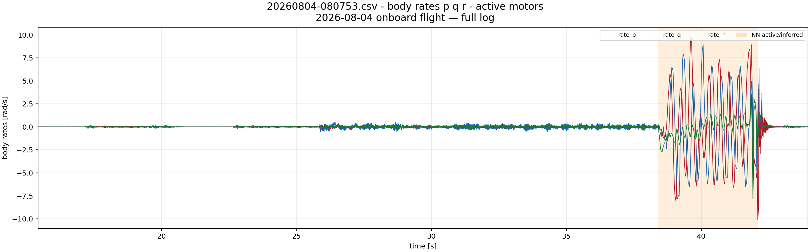
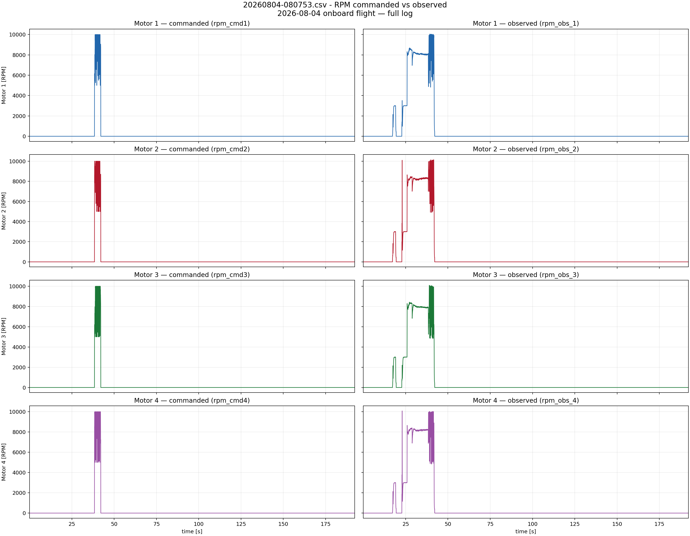

20260804-080753.csv
2026-08-04 onboard flight — full log
Orange bands mark NN activity. For old logs without nn_enabled, activity is inferred from nn_in_*, network_out*, and rpm_cmd* becoming non-zero.
NN intervals shown: [(38.386372, 42.095348)]
20260804-080753_state_commands_full.png

20260804-080753_all_states_full.png

20260804-080753_body_rates_full.png

20260804-080753_nn_raw_outputs_full.png

20260804-080753_nn_normalized_full.png

20260804-080753_state_commands_active_motors.png

20260804-080753_all_states_active_motors.png

20260804-080753_body_rates_active_motors.png

20260804-080753_rpm_commanded_vs_observed_4x2_full.png
